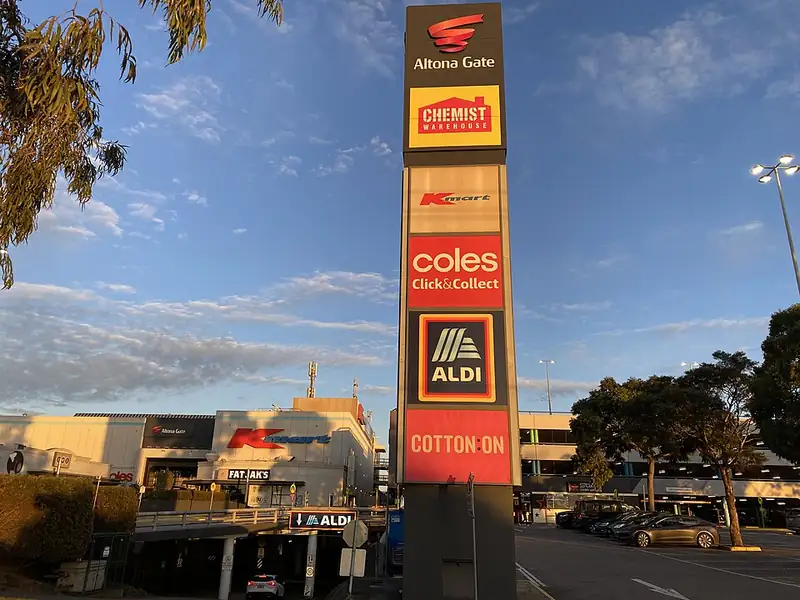

Altona Gate Shopping Centre, Altona North
Altona Gate Shopping Centre is a shopping centre in Altona North, in the Hobsons Bay City Council area, handy for a rainy day or a quick stop. Altona Gate SC/Duosa Rd (bus) is a 2-minute walk away and the nearest public toilet is about 320 m away with a baby change table.


Quick facts
- Toilets
- 320 m away, baby change, accessible
- Public transport
- Altona Gate SC/Duosa Rd, bus (routes 432, 471), 2 min walk
This page has basic info from the map: name, location and type. We have not checked the details yet. Know this place? Tell us.
Questions parents ask
- Where is Altona Gate Shopping Centre?
- Altona Gate Shopping Centre is in Altona North, Victoria.
- Are there toilets at Altona Gate Shopping Centre?
- The nearest public toilet is about 320 m away, with a baby change table.
- How do I get to Altona Gate Shopping Centre by public transport?
- The closest stop is Altona Gate SC/Duosa Rd (routes 432, 471), a 2-minute walk.
Nearby places
- A.W. Bond Reserve
Park · Altona NorthFreeBus 1 min walk
- Playground at A.W. Bond Reserve
Playground · Altona NorthFreeBus 1 min walk
- McDonald's
Cafe or restaurant · Altona NorthBus 2 min walk
- Hungry Jack's
Cafe or restaurant · Altona NorthBus 1 min walk
- Playground at D. N. Duane Reserve
Playground · BrooklynFreeBus 6 min walk
- V. L. Hearn Reserve
Park · Altona NorthFreeBus 3 min walk
- Cruikshank Park BMX track
Skate, BMX or pump track · YarravilleFreeBus 3 min walk